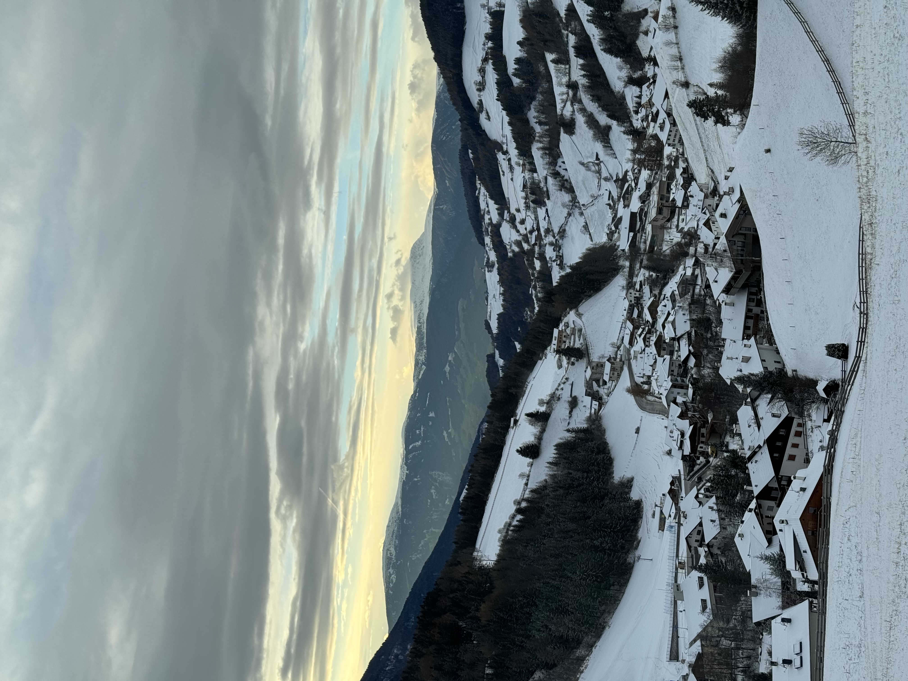

todat is 31/1/2024, and im happy with my first website
continue learn HTML herethis is intersting storo about winnie the poo
this is the secound story, contain some ad

This is the final paragraph!
test text
Another bold sentenceMy Bonnie lies over the ocean. My Bonnie lies over the sea. My Bonnie lies over the ocean. Oh, bring back my Bonnie to me.
My Bonnie lies over the ocean.
My Bonnie lies over the sea.
My Bonnie lies over the ocean.
Oh, bring back my Bonnie to me.
| country | capital | weather | Local Currency | attractions | pic |
|---|---|---|---|---|---|
| IsraelAsia | Jerusalem | 12C°rainy🌧 | NIS | The Western Wallthe Dead Sea |  |
| TThailandAsia | Bangkok | 12C°cloudy⛅️ | Butt | BeachesTemples |  |
| SwitzerlandEurope | Bern | 29C°bright🌤 | Swiss franc | The Alps Nature trip |  |
| ItalyEurope | Roma | 17C°bright🌤 | Euro | Pisa towerDolomites |  |
| BrazilSouth America | BrasÃlia | 25C°Scattered thunderstorms🌩 | Brazilian Real | Jesus statueIguazu Falls |  |
| CanadaNorth America | Ottawa | -1C°bright🌤 | canadian dollar | Niagara FallsJasper National Park |  |
| TanzaniaAfrica | Dodomer | 29C°rainy🌧 | Tanzanian shilling | Serengeti National ParkOl doinio langai |  |
| New South WalesAustralia | Sydney | 23C°Cloudy🌥 | Australian dollar | Opera HouseKakadu National Park |  |